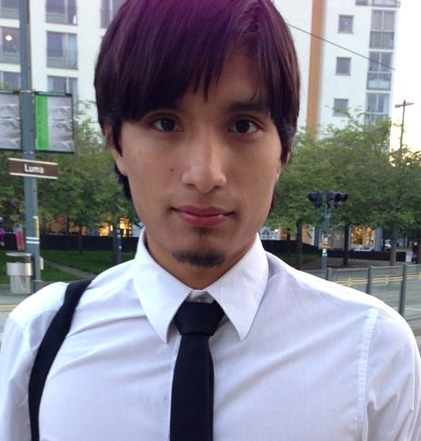

Namn: Leonardo Enzo Marcani Uriona
Email: d4rkleo94@hotmail.com
Mobil: 0720472240
Ort: Tyresö
Hej, Enzo Marcani heter jag och jag flyttade hit i Stockholm i 2007.Jag började studera här i årskurs 7 fram till årskurs 9 i Eriksdalsskolan och studerade därefter 3 år på Thorildsplans Gymnasiet. Inriktningen var Data IT. Vi läste intressanta ämnen som webbdesign, operativ system, programmering, matematik, styrteknik, databashantering och flera övriga ämnen.
Jag tycker om att hålla på med datorer och designa appar. Jag installerar väldigt ofta olika softwares på min bärbara dator och lär mig mycket om deras kunskaper.
Jag tycker om att promenera runt i Stockholm och lära känna nya gator för jag har väldigt bra lokalsinne, och det kan vara användbar för något framtid jobb som är beroende på hur bra lokalsinne man har.
Jag är väldigt intresserad av mobiltelefoner och spelkonsoler och jag kan mycket om deras operativ system, med mobiltelefonerna har jag mycket kunskap om när det gäller vad de har för specifikationer och jag brukar jämföra dem med andra mobiler och rekommendera andra personer vilken som passar bäst beroende på personens personlighet, så jag kan vara en duktig mobilförsäljare.
På fritiden brukar jag spela fotboll med vänner och spela gitarr hemma. Jag är väldigt intresserad av datorer och program som nu används mycket i samhället,plus att jag är en väldig social kille som har intresse för andras problem och vill gärna hjälpa till med dem. Jag tycker om att göra olika saker varje dag.
Bred, generell utbildning, 2007—2010
Jag började årskursen 7 i samma år jag flyttade till Sverige, det var då jag började fortsätta med mina studier efter att ha gått i grundskolan i Peru.
Data IT, 2010—2013
Jag gick i datainriktningen under 3 år med full kunskap om Data-IT när det gäller programmering, databashantering, webbdesign, IT-samordning osv, och nu är jag förberedd att gå vidare med studier och jobb.
Water Company, 2009—2011
Jag jobbade med av Water Companys arbetare under sommarna 2009-2011 . Vi leverade vattenmaskiner och vattendunkar runt hela Stockholms län, med bra service för olika kunder.
Hjälpmedelsinstitutet, 2012—2013
Jag har praktiserad i HI under vårterminen-höstterminen 2012 och vårterminen 2013. Jag har jobbat med att fixa datorer och installera hårdvaror, jag gav teknisk support till mina medarbetare med sina tekniska problem.
Svenska: Flytande
Engelska: Flytande
Spanska: Flytande
God erfarenhet av ledande datorbaserade Dataprogramhantering. Erfarenhet av Arbetsmiljö samt kundtjänst på ett företag med ett hundratal kunder. Operativsystem, programmering, webbdesign och databashantering är jag duktig på.
Jag har väldigt bra lokalsinne,speciellt i stadsdelarna som Kungsholmen,Östermalm,Vasastaden och Södermalm. Jag har mycket kunskap om mobiltelefoner och kan vara en bra försäljare.
Dennis Selman (Water Company) 0707452503
Anders Larsson (Hjälpmedelsinsitutet) 08-620 17 66
Min familj, fotboll, friluftsliv, spelar gitarr , gym och umgås med släkt och vänner. Hålla på med datorer. Promenera runt i stan och lära sig namn på gatorna. Hålla på med att jämföra mobiltelefoner med andra och lära mig mycket kunskap om dem.
Jag är lite osäker om hur min framtid skulle se ut, jag tycker väldigt mycket om systemutveckling och jag skulle vilja jobba med det efter 2 år, kanske gå på universitet också, så att jag pluggar för att bli systemingenjör också.